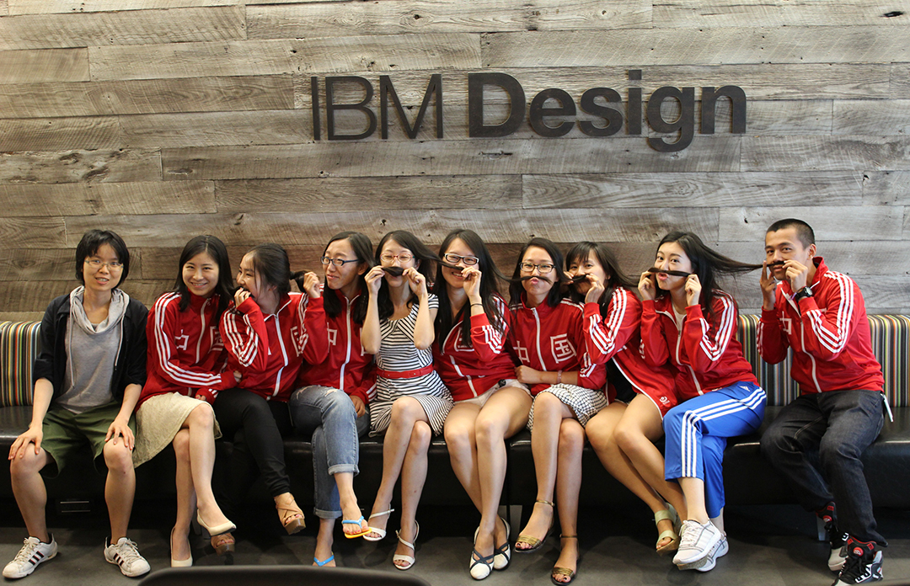
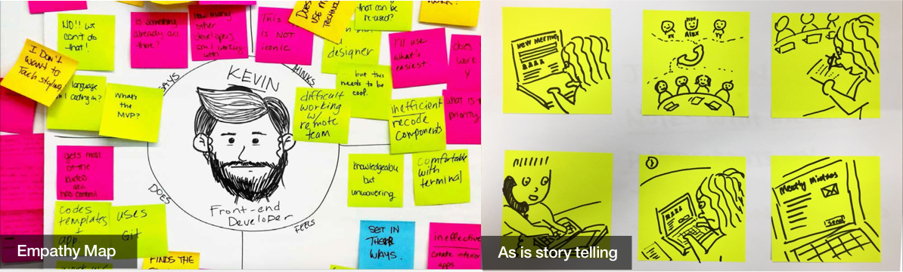
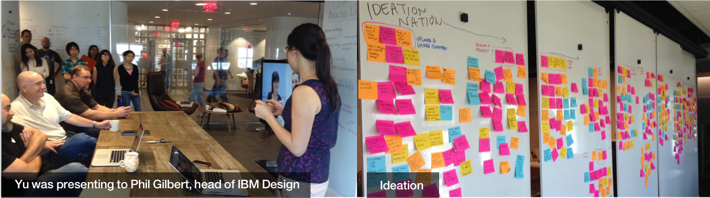
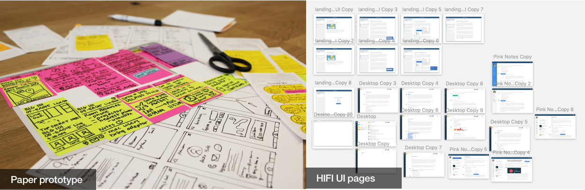
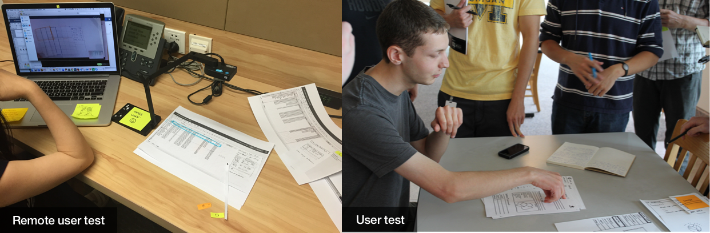
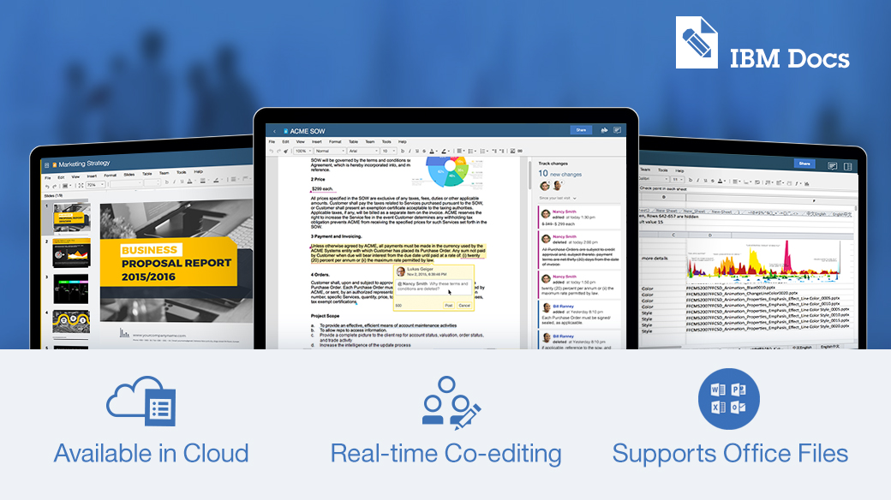
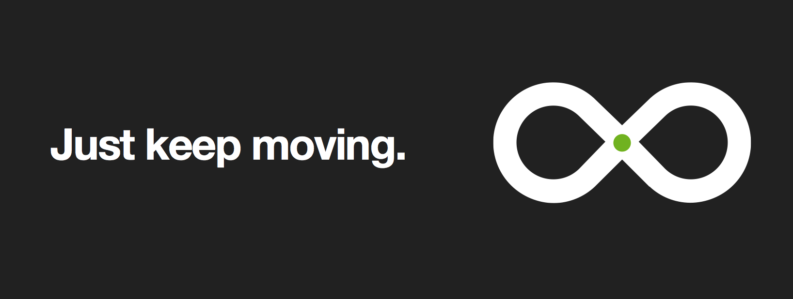

IBM Design Camper
In IBM Austin Design Studio, I learned and practiced IBM Design Thinking, involved in different phases of project as researcher, UX and UI designer, Worked on Watson and Bluemix for 3 weeks respectively and then worked on connect office app project for 6 weeks, lived with different designers from different IBM studios all around the world.
Working process in real project
Our stories begins from Customer requests. Offer managers or sales bring it to the team. Design team discuss with OM, PM, Dev lead to see if it can be a good product from user side, marketing and business view. If we think it worth a try, we’ll put it in our realse plan. Design team wil go to understand the real painpoint of the customers. Sometimes we just have a quick idea and we'll quick prototype it to show to offer managers. We call it “POC”.
Understand
In understanding process, we run workshop with sponsor user ( customer representative). Design team, Dev team and PM must attend the workshop. Because we will use empathy map and journey map to understand the persona and the existing as is workflow. So that we will get insight of the user pinpoint and design opportunity.
Explore
With the feedback from empathy map and as is flow, we brainstorm and discuss. We'll creat our persona and hills. So that the whole team can understand the problems and our goals clearly. From now on，we enter the explore process. I will write the story everyday with lo-fi wireframe drawing to show our ideas quickly. That is the ideal workflow of the user in this journey. Our design work is story-driven process. We think from our persona everyday to write a perfect story. Sometimes I really think I’m a writer! We will present to PM, OM, Dev with the final version that we think is the best user experience. But we'll consider the balancing from implementation view.
Prototype and Evaluate
After the team approve the to be story. I will begin the ux design finally. I design the system map and wireframe of each pages. Then I do the UI design using the IBM design language. When it’s done. I always do the user test using paper prototype or interactive prototype.
 Deliver
Then I deliver the design spec to dev team. I collaborate with the developers to ensure quality and improve the user experience. Reflect on the idea and feedbacks, we explore and iterate product continuously to deliver delightful user experience.
Design process is a loop. We'll never stop thinking and making better product.
